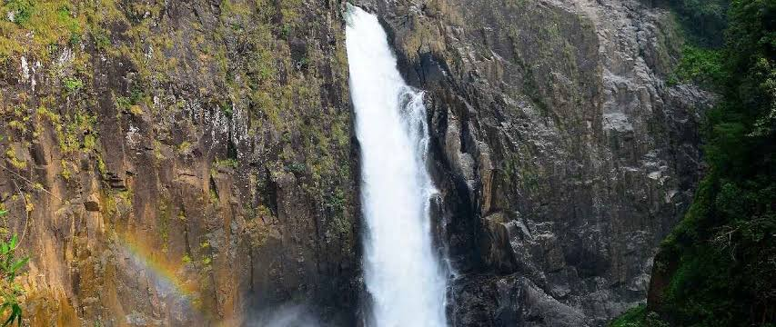
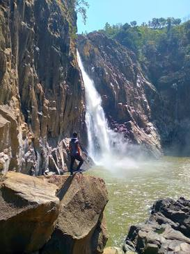
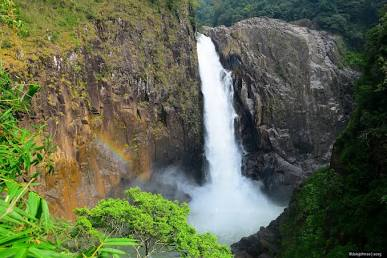
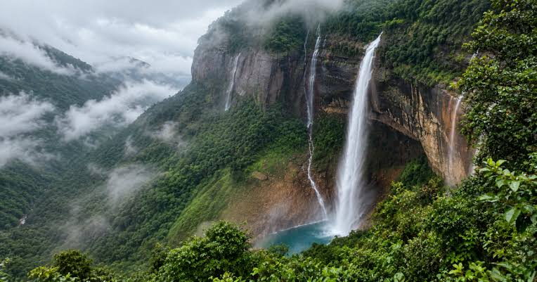
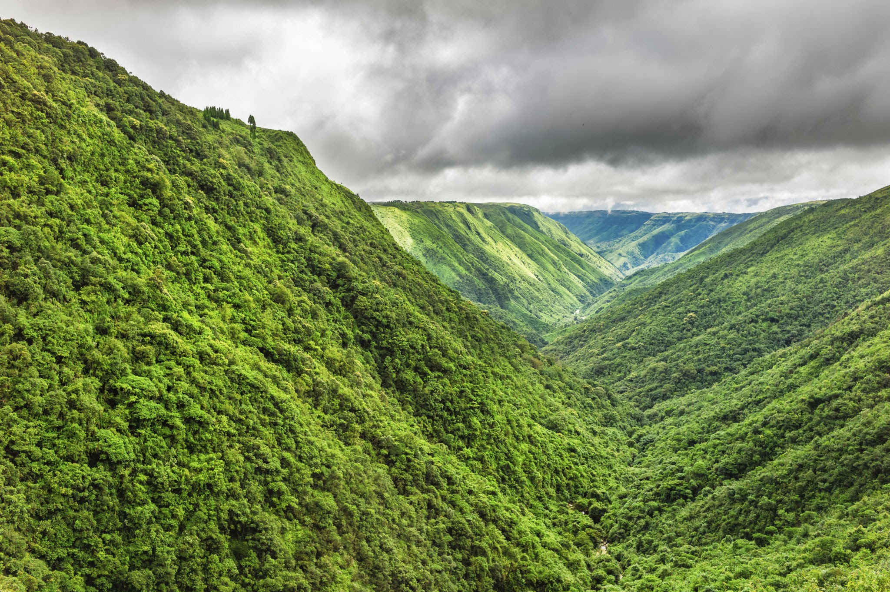

Located in the Khasi Hills region of northeastern India.

MEGHALAYA • WATERFALL EXPLORER
Langshiang Falls
A dramatic waterfall in the heart of the Khasi landscape.
Discover Langshiang Falls, its deep valley setting, forest-covered hills, seasonal water flow and the distinctive landscapes of Meghalaya.
SCROLL TO EXPLORE
↓
AT A GLANCE
Langshiang in Focus
Water descends through the hilly drainage landscape.
The waterfall is framed by dramatic valleys and forested slopes.
Seasonal rainfall strongly influences its water volume.

01
THE VALLEY WATERFALL
ABOUT LANGSHIANG
Water descending through a Khasi valley
Langshiang Falls is associated with the dramatic hill and valley landscapes of Meghalaya. Its setting combines steep terrain, dense vegetation and seasonal streams shaped by the region's heavy rainfall.
The surrounding Khasi landscape gives the waterfall a distinctly green character, particularly during and after the monsoon season.
LOCATION
Meghalaya, Northeast India
SETTING
Khasi Hills & deep valley landscape
WATER SOURCE
Seasonal hill streams
BEST SEASON
Monsoon & post-monsoon
FOLLOW THE WATER
From Hills to Falls
Explore how Meghalaya's elevated landscape directs seasonal water toward the valley.
01
Khasi Hills
Rainfall collects across the elevated hill landscape.
↓
02
Hill Streams
Water follows natural channels through the rugged terrain.
↓
03
Langshiang Falls
The stream plunges through the valley landscape.
VERTICAL SCALE
Experience the Elevation
Where a documented height is unavailable or inconsistent, explore the concept of waterfall elevation rather than treating an uncertain figure as an exact measurement.
HIGH
VALLEY
ELEVATION VISUALIZER
Adjust the vertical scale
Langshiang's dramatic appearance comes from the combination of falling water, steep terrain and deep valley surroundings.
70
scale units
Height figures should be cited only when verified
from a reliable source.
VALLEY & GEOLOGY
Shaped by rock and water
Meghalaya's landscape is characterized by deeply dissected hills, valleys, exposed rock surfaces and intense seasonal rainfall.
Around Langshiang, the interaction between flowing water and resistant rock helps create the dramatic valley scenery associated with the waterfall.

02
ROCK & VALLEY
SEASONAL CHARACTER
Langshiang Through the Seasons
Compare the changing character of the landscape and waterfall across the year.

MONSOON
PEAK RAINFALL
Lush and powerful
Heavy Meghalaya rainfall increases stream flow, deepens the greenery and gives the valley a dramatic, misty appearance.
RELATIVE FLOW
100%
EXPLORE THE LANDSCAPE
A Living Landscape
Move through different elements of the Langshiang environment.
01
/ 04
SELECTED LANDSCAPE
Waterfall
The waterfall forms the central visual feature of the valley landscape.

03
KHASI FOREST LANDSCAPE
FOREST ECOSYSTEM
Green hills surrounding the waterfall
Meghalaya's high rainfall supports rich vegetation across the Khasi Hills. Forest patches, shrubs, mosses and moisture-loving plants contribute to the green appearance of the waterfall landscape.
The surrounding ecosystem is an important part of the experience, making the journey to a waterfall about more than the waterfall itself.
01
High rainfall environment
02
Forest-covered hill slopes
03
Moisture-rich vegetation
EXPLORE MORE
Nearby Attractions
Extend your Meghalaya waterfall and landscape journey.
Shillong
Meghalaya's capital city and an important base for exploring the surrounding Khasi Hills.
Sohra
A famous high-rainfall destination known for dramatic cliffs, valleys, caves and waterfalls.
Nohkalikai Falls
One of Meghalaya's most spectacular waterfall viewpoints near Sohra.
Mawsynram
A renowned high-rainfall landscape surrounded by green hills and distinctive natural formations.
FIND LANGSHIANG
Location & Map
Explore the Langshiang Falls area of Meghalaya.
📍
Langshiang Falls
Meghalaya, India
PLAN YOUR VISIT
Best Visiting Season
The monsoon and post-monsoon period can provide stronger water flow and lush scenery. Visitors should check local conditions before travelling because heavy rain can make trails and rocky areas slippery.
RECOMMENDED
MONSOON →
POST-MONSOON
RESEARCH & REFERENCES
Sources & Credits
Verify destination information and provide attribution for photographs used on the page.
Image Credits
Replace the entries below with the actual photographer, website and license information for every downloaded image.
- Hero photograph — photographer/source to be credited
- Waterfall landscape — photographer/source to be credited
- Forest photograph — photographer/source to be credited
- River photograph — photographer/source to be credited
- Rocky landscape — photographer/source to be credited